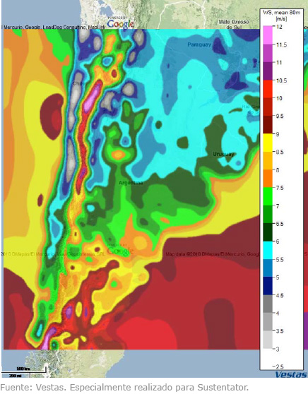

ENERGÍA EOLICA
¿Cómo funcionan?
El aerogenerador convierte la energía del viento utilizando un generador de inducción proporcionando grandes ventajas en lo referente a control de energía, versatilidad de aplicaciones, mantenimiento y costos del sistema.
El sistema entrega al usuario una tensión alterna de 220 volts (50/60Hz), equivalente a la que provee la red nacional de energía eléctrica permitiendo, de esta forma, conectar cualquier artefacto eléctrico sin necesidad de utilizar equipos intermedios.
¿Qué variedades se ofrecen?
Los generadores eólicos se presentan en tres modelos:
Generador Eólico (1000W 24V/ 1200W 12V / 1300W 48V)
Generador eólico para viviendas rurales: Con Baterías.
¿Cuáles son las características del generador eólico?
¿Cuando se comienza a generar energía?
Los generadores requieren velocidades de viento de 4 m/s (aprox. 14 km/h) para comenzar a entregar energía. Mientras que entregan su potencia nominal a los 12 m/s.
(44 km/h).
¿Cómo se regula la energía generada (en el caso del generador para viviendas)?
El generador almacena la energía en un banco de baterías (48V) controlando electrónicamente las tensiones y corrientes de carga y descarga de las mismas.
¿Donde se pueden utilizar los aerogeneradores?
• Viviendas y escuelas rurales.
• Bombeo y transporte de agua.
• Refugios aislados.
• Iluminación de emergencia.
• Campings.
• Casas rodantes.
• Sistemas de riego.
¿Cómo es la instalación?
La instalación es sencilla y puede ser realizada hasta 50 metros de la estructura a electrificar. El aerogenerador se monta arriba de una torre de 18, 24, 30 o 36 metros de altura según la necesidad.
¿Los componentes de los aerogeneradores son resistentes?
Los materiales combinados para su fabricación y perfil aerodinámico aseguran una gran resistencia y durabilidad de las mismas.
¿Requieren mantenimiento?
El generador no requiere mantenimiento a lo largo de su vida útil, ya que no posee carbones, escobillas ni anillos rozantes.
¿Los sistemas tienen garantía?
Los aerogeneradores cuentan con una garantía contra todo riesgo por el periodo de 1 año.
Mapa Eólico de Argentina
Es importante aclarar, que el siguiente gráfico está realizado en m/s (el equivalente en km/h, resulta de la multiplicación de los m/s x 3.6). Por ejemplo, 5 m/s se transforman de la siguiente manera:
• 5 m/s x 3.6 = 18 km/h
|  |  |
Posee gigantescas superficies ociosas donde construir parques y numerosas zonas con un factor de capacidad (FC) del 45%. El FC se define como el valor porcentual de la energía que una turbina eólica entregará durante todo un año en relación a la cantidad de energía que podría entregar una turbina trabajando el 100% del tiempo.
Inclusive varias zonas del sur de la provincia de Buenos Aires tienen un FC = 35%, mientras que la mayoría de los lugares de Europa donde la energía eólica está muy desarrollada, tienen un FC que ronda el 25%.